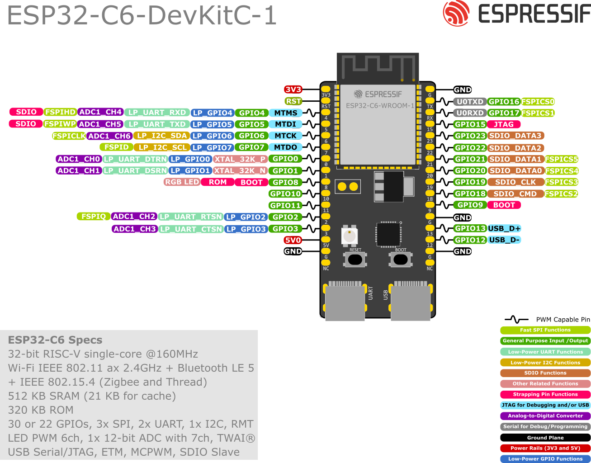

Build Hub
Build Hub Resource Hub / Hardware / H1
H1 · ControllerESP32-C6
The controller reads the sensors and encoders, drives the motors and runs the navigation code. Plan its pins before you wire anything.
01 What the mouse needs from it
| Motor driver | 2 PWM + 2 direction outputs |
|---|---|
| Wheel encoders | 4 GPIO inputs (A and B for each wheel) |
| Distance sensors and IMU | 1 shared I2C bus (SDA, SCL) + 3 XSHUT outputs |
| Optional | IMU interrupt input, battery-voltage ADC input |
3.3 V logic only. Never feed 5 V into a GPIO, and never power a motor from one. The motor driver switches the motor supply.
02 Power
- Battery feeds the buck converter (H5) for the controller, and the motor driver takes its own motor supply.
- Controller, sensors and driver must share one ground.
- USB, the 5V header and the 3V3 header are mutually exclusive power sources. Use one at a time.
- Remove motor power before changing wires. A loose jumper can put battery voltage on a GPIO.
03 Pin map
Check your exact board revision, then agree one pin map and use the same names in the wiring and the firmware.

- Avoid the strapping pins (GPIO4, 5, 8, 9, 15 on the DevKitC-1) unless the circuit leaves them at a safe level during reset.
- GPIO12 and GPIO13 are the native USB pins, so reusing them removes USB.
- Use pulse counting or interrupts for encoders, and keep encoder wires away from motor leads.
- Check for on-board pull-ups before adding I2C pull-ups.
04 Bring-up order
- No power: check for shorts between power and ground, and disconnect the motors.
- Flash: power over USB and print a line to the serial monitor. If upload fails, hold Boot, tap Reset, release Boot.
- One output: toggle a pin and check it with a multimeter.
- Sensor bus: add one I2C device at a time (H4).
- Motors: wheels off the table, low PWM, one motor and direction at a time (H2).
- Integrate only after each part passes its own test, and commit after every known-good stage.
Board resets when the motors start? Measure the 5 V rail and battery voltage during acceleration. It is usually sag, grounding or noise.